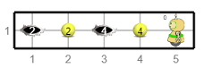

Тест - условна петља и гранање¶
Питање 1.¶
- Не.
- Тачно
- Да.
- Нетачно
Q-47: Дата је наредба while :
from karel import *
while ima_loptica_na_polju()
uzmi()
Ова наредба је написана у складу са правилима програмског језика Пајтон? Изабери тачан одговор.
Питање 2.¶
- Робот ће оставити све лоптице које има код себе на пољу на коме је.
- Тачно
- Робот ће оставити све лоптице које има код себе на пољу испред себе.
- Нетачно
- Робот ће оставити једну лоптицу на пољу на коме се налази.
- Нетачно
- Робот ће оставити једну лоптицу на пољу испред себе.
- Нетачно
Q-48: Дата је наредба while :
from karel import *
while ima_loptica_kod_sebe():
ostavi()
Шта је резултат извршавања ове наредбе? Изабери тачан одговор.
Питање 3.¶
from karel import * while mozeNapred(): napred() uzmi()
from karel import * while mozeNapred(): napred() uzmi()
from karel import * for i in range(3): napred() uzmi()
from karel import * for i in range(3): napred() uzmi()
Изабери тачанe одговорe:
- 1
- Тачно
- 2
- Нетачно
- 3
- Тачно
- 4
- Нетачно
Q-49: Нека је Карел робот у положају као на слици.

Извршавањем којих од наредних програма ће робот стићи до поља (4,1) и узети лоптицу?
Питање 4.¶
Нека је Карел робот у положају као на слици
и нека је његов задатак да сиђе низ степенице и caкупи све лоптице које му се нађу на путу. Дат је недовршен програм који би требало да представља решење роботовог задатка.
from karel import * while (moze_napred()): ____________ ____________У блоку петље недостаје неколико наредби. Допуни тело петље навођењем што мање понуђених наредби у одговарајућем редоследу, тако да Карел узме сваку лоптицу чим може, а да се извршавањем програма исправно решава задатак.
(Одговор упиши навођењем редних бројева наредби распоређених у одговарајући редослед, нпр. 12213) Одговор:
Питање 5.¶
from karel import * while (moze_napred()): while (ima_loptica_na_polju()): uzmi() while (ima_loptica_kod_sebe()): ostavi() napred()
from karel import * napred() while (moze_napred()): while (ima_loptica_kod_sebe()): ostavi() napred() while (ima_loptica_na_polju()): uzmi() napred()
from karel import * while (moze_napred()): while (ima_loptica_na_polju()): uzmi() napred() while (ima_loptica_kod_sebe()): ostavi() napred()
from karel import * while (moze_napred()): napred() while (ima_loptica_na_polju()): uzmi() napred() while (ima_loptica_kod_sebe()): ostavi()
from karel import * while (moze_napred()): while (ima_loptica_na_polju()): uzmi() napred() while (ima_loptica_kod_sebe()): ostavi()
- Програм (1)
- Нетачно
- Програм (2)
- Нетачно
- Програм (3)
- Нетачно
- Програм (4)
- Тачно
- Програм (5)
- Тачно
Q-50: Нека се Карел робот налази у лавиринту као на слици
и нека је лавиринт ЗАЧАРАН тако да се при сваком покретању програма може променити дужина лавиринта и број лоптица на пољима. У свакој верзији лавиринт се састоји из једнаког броја поља са лоптицама и поља са рупама наизменично распоређених (као на слици).
Извршавањем којих од наредних програма ће робот проћи кроз цео лавиринт, на сваком месту где има лоптица сакупити све лоптице и убацити их у прву наредну рупу?
Напомена: Сматра се да је код исправан уколико при извршавању Пајтон окружење не пријави грешку, као што је грешка која би се јавила при извршавању команде napred() када се робот налази испред зида лавиринта.
Изабери тачанe одговорe:
Питање 6.¶
- Да
- Тачно
- Не
- Нетачно
Q-51: Написана је наредба if :
from karel import *
if mozeNapred():
napred()
else
levo()
Да ли је ова наредба написана у складу са правилима програмског језика Пајтон? Изабери тачан одговор:
Питање 7.¶
from karel import * if mozeNapred(): napred() uzmi()
from karel import * if mozeNapred(): napred() uzmi()
from karel import * if mozeNapred() napred() uzmi()
from karel import * if mozeNapred(): napred() uzmi()
- 1
- Тачно
- 2
- Нетачно
- 3
- Нетачно
- 4
- Нетачно
Q-52: Извршавањем ког програма ће робот ако може да пређе на наредно поље покупити лоптицу са тог поља (подразумева се да је на сваком пољу лоптица)?
Изабери тачан одговор:
Питање 8.¶
- Ако постоје лоптице на пољу, робот ће узети све, у супротном ће оставити једну.
- Нетачно
- Ако постоје лоптице на пољу, робот ће узети једну, у супротном ће оставити једну.
- Тачно
- Ако постоје лоптице на пољу, робот ће узети једну.
- Нетачно
- Ако нема лоптица на пољу, робот ће узети једну.
- Нетачно
Q-53: Дата је наредба if :
from karel import *
if ima_loptica_na_polju():
uzmi()
else:
ostavi()
Шта је резултат извршавања следеће наредбе? Изабери тачан одговор.
Питање 9.¶
ima_loptica_kod_sebe() ostavi()
if (ima_loptica_kod_sebe()): ostavi()
if (ima_loptica_kod_sebe()): ostavi()
while (ima_loptica_kod_sebe()): ostavi()
if (broj_loptica_kod_sebe()): ostavi()
- 1
- Нетачно
- 2
- Нетачно
- 3
- Тачно
- 4
- Нетачно
- 5
- Нетачно
Q-54: Извршавањем којег од наредних делова кода ће робот прво извршити проверу да ли има бар једну лоптицу код себе, а затим оставити једну лоптицу на пољу на ком се налази?
Питање 10.¶
ima_loptica_kod_sebe() ostavi()
if (ima_loptica_kod_sebe()): ostavi()
if (ima_loptica_kod_sebe()): ostavi()
while (ima_loptica_kod_sebe()): ostavi()
- 1
- Нетачно
- 2
- Нетачно
- 3
- Тачно
- 4
- Нетачно
Q-55: Извршавањем којег од наредних делова кода ће робот прво извршити проверу да ли има бар једну лоптицу код себе, а затим оставити једну лоптицу на пољу на ком се налази?